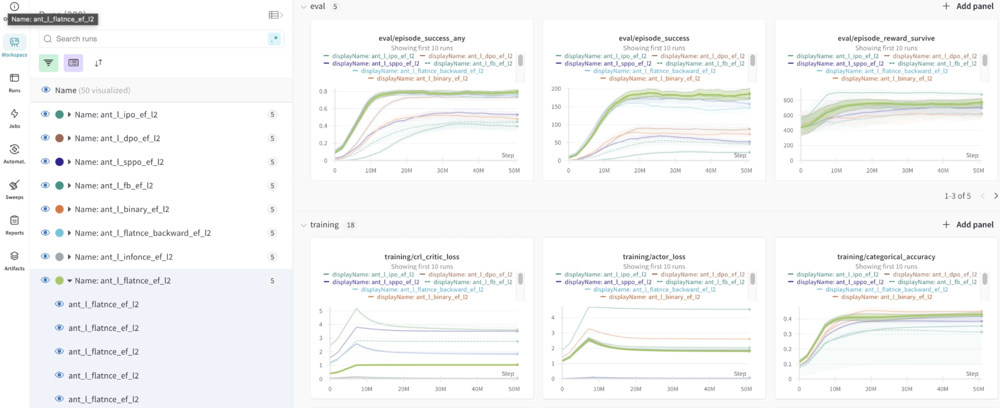

Basic Usage
Experiments
JaxGCRL is highly flexible in terms of parameters, allowing for a wide range of experimental setups. To run a basic experiment, you can start with:
For a complete list of environments, refer to the environments section or source code.Number of environments
One of JaxGCRL's key features is its ability to run parallel environments for data collection. If your GPU has limited memory, you can reduce the number of parallel environments with the following parameter:
Replay buffer
num_envs * (episode_length - 1) must be divisible by batch_size due to the way data is stored in replay buffer.
Training hyperparameters
You can customize the neural network architecture by adjusting the number of hidden layers (n_hidden), the width of hidden layers (h_dim) and the representation dimension (repr_dim):
JaxGCRL supports various built-in energy functions and contrastive loss functions. For example, to use an L2 penalty with the InfoNCE-backward contrastive loss, you can run:
For a full list of available energy functions and contrastive losses, see: [ energy functions | contrastive losses ]JaxGCRL offers many other useful parameters, such as num_timesteps, batch_size, episode_length. For a complete list of parameters, their descriptions, and default values, refer to link.
You can also find additional information about main arguments and hyperparameters by running:
python training.py --help
To execute multiple experiments, you can use a bash script. For example, the script below runs experiments to test the performance of different contrastive losses:
for c_loss in binary infonce flatnce fb dp; do
for seed in 1 2 3 4 5; do
python training.py --seed ${seed} \
--project_name crl --group_name contrastive_loss_experiments \
--exp_name ${c_loss} \
--contrastive_loss_fn ${c_loss} --energy_fn l2 \
--log_wandb
done
done
Wandb support
Wandb account
If you haven't configured yet wandb, you might be prompted to log in.
We highly recommend using Wandb for tracking and visualizing your results (Wandb support). Enable Wandb logging with the --log_wandb flag. Additionally, you can organize experiments with the following flags:
- --project_name
- --group_name
- --exp_name
All of the metric runs are logged into wandb. We recommend using it as a tool for running sweep over hyperparameters.
- Run exemplary
sweep: - Then run wandb agent with :
Besides logging the metrics, we also render final policy to wandb artifacts.
